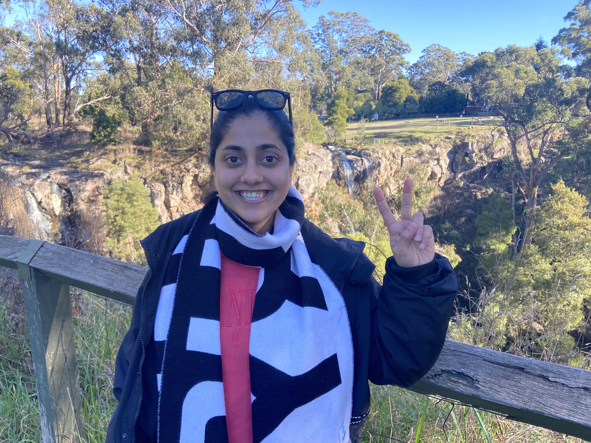

Full disclosure: I've been meaning to do this for actual years. The kind of thing you keep telling yourself you'll start "next month," until one day next month finally shows up. Well, it's here, and I am genuinely thrilled about it.
Somewhere along the way, someone probably told you to just ChatGPT it. And honestly, that works, for about one caption. After that you're left with eleven versions of the same sentence and a creeping suspicion your brand now sounds like a robot wearing a name tag. That's usually the exact moment people find me.
Here's the thing: I've been doing this since well before AI showed up to the party. Six years in marketing, running content calendars and social channels, planning Google and Meta ad campaigns with actual keyword research behind them, designing everything from social graphics to brochures in Canva, InDesign and Illustrator, even getting my hands into website builds, and reading the analytics afterward so someone has to. AI didn't replace any of that. It just made me faster at it.
So while everyone else hands their brand voice over to a chatbot and hopes for the best, I use AI as a tool I control, not a replacement for an actual strategy. That's the difference between content that sounds like everyone else's and content that sounds like you.
You focus on running your business. I'll handle making it sound like you, look good, and actually reach people, strategy, design and all. So yes, I'm new at doing this officially. I'm not new at being good at it. Let's get started.
I use AI to move fast — never to sound like it.